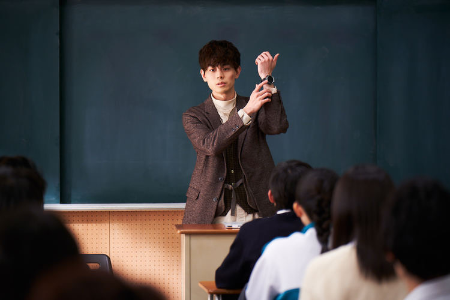
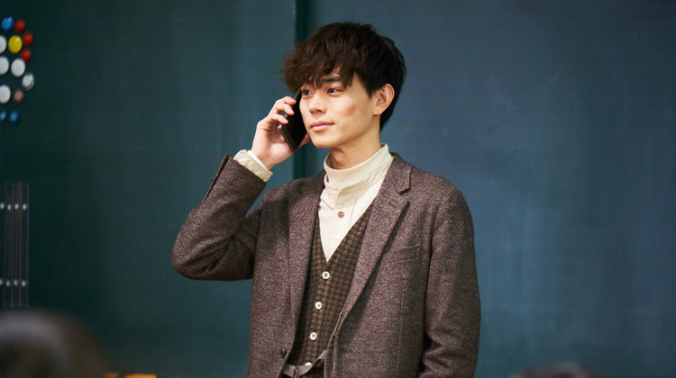
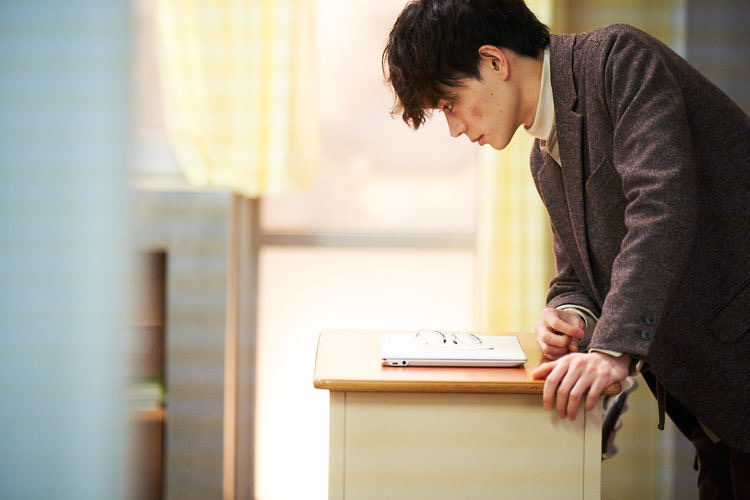

Drama
noun
UK /ˈdrɑː.mə/ US /ˈdræm.ə/
a play in a theatre or on television or radio, or plays and acting generally.
Cambridge Dictionary
Top 5 Drama Recommentaion
Top 1

3年A組－今から皆さんは、人質です－
3年A班－從此刻起，大家都是我的人質－
Mr. Hiiragi's Homeroom
2019
Rating
類型
校園 懸疑
集數
11
每集長度 不含廣告：50分鐘
含廣告：60分鐘
初回延長30分鐘
簡介
距離畢業前十天，外表不起眼的美術教師暨3年A班的班導師柊一颯（菅田將暉 飾）為了解開在幾個月前某位高中生自殺的謎團，將班上的29名同學集合起來，要求提出兇手的答案，並宣佈「從現在起，大家都是我的人質」。隨後便引爆炸彈綁架全班，將所有人封鎖在校舍內，藉以強迫學生面對真相，否則誰都不能從學校裡畢業。而突如響起的爆炸聲伴隨著眾人的嘩然聲，罪犯教師與人質學生的最後一堂授課就此即將展開。
Top 2

アンナチュラル 不自然死因研究所 UNNATURAL
2018
Rating
類型
法醫
集數
10
每集長度:54分鐘（含廣告）
簡介
本劇講述在日本厚生勞動省新設立的「UDI Lab」英語：『Unnatural Death Investigation Laboratory，（簡稱UDI Lab）』裡，由法醫解剖人們在不自然死亡的屍體上找出其真正死因的單元劇故事。
Top 3

ガリレオ 神探伽利略 Galileo
2007
Rating
類型
偵探、推理、懸疑
集數
季數:2
集數:21
每集長度: 連續劇 54分鐘 特別篇 130分鐘
簡介
日本富士電視台的推理電視劇系列，改編自東野圭吾的「伽利略系列」推理小說，由福山雅治主演，劇中物理學家湯川學與刑警運用科學原理來偵破各種看似超自然現象的案件。
Top 4
校閲ガール 校閱女孩 Pretty Proofreader
2016
Rating
類型
職場
集數
集數 10+SP
每集長度 60分鐘
簡介
北關東出身、家境富裕且喜愛閱讀的河野悅子，一心一意嚮往時尚雜誌的編輯工作。高中畢業後進入東京的貴族大學「聖妻女子大學」，畢業之後，經過競爭激烈的考試之後，終於如願至大型出版社任職，出版社主管卻因為她的名字，將悅子調至負責校對的部門（女主角名字〔河野こうの 悦子えつこ〕的簡稱〔河悦こうえつ〕，恰巧與校對〔校閲こうえつ〕發音相同）⋯⋯
Top 5
初戀那一天所讀的故事 初めて恋をした日に読む話
2019
Rating
類型
戀愛
集數
集數 10
每集長度 67分鐘（不含廣告約57分鐘）
簡介
在不入流的補習班當老師的春見順子在初中和高中時期都曾是一名優等生。但是，自從考取東京大學失敗開始，就業和戀愛就接連不順，甚至因此和住在一起的母親的關係也變得很差。她被高中生由利匡平的父親拜託輔導他考取東京大學。由利上的高中很差，是個把頭髮染成粉色的不良學生，但是順子在被父親當成傻子的匡平中看到了曾經未能回應母親的期待的自己的影子。為了不讓他成為自己的樣子，她決定放手一搏。被順子感動的匡平，為了反駁侮辱自己和補習班的父親，主動提出讓順子輔導她。就這樣兩人為了東京大學合格而努力的故事便開始了。
Favourite Actor



菅田將暉
菅田 将暉／すだ まさき Suda Masaki
21/2/1993
日本男演員、歌手，出身自大阪府箕面市，所屬經紀公司為TOP COAT。2017年獲得第41屆日本電影學院獎最佳男主角，以25歲之齡成為史上第二年輕的影帝。
電影
《共食家族》
《海月姫》
《暗殺教室》
《溺水小刀》
《奇蹟～那時的普通人～》
《帝一之國》
《銀魂》
《啊，荒野》
《煙花》
テレビドラマ
《假面騎士W》
《多謝款待》
《死神君》
《人民之王》
《校對女王》
《女城主 直虎》
《3年A班－從此刻起，大家都是我的人質－》
《Dele 刪除人生》
2007年
報名參加Amuse舉辦的甄選會，入圍最後三十名。
2008年
高一的菅田將暉參加第21屆JUNON SUPER BOY選拔賽，入圍最終十三名。
2016年
出演9部電影、5部電視劇、8支廣告，被票選為2016年度爆紅男演員第1名(2015年為第二名)。
2017年
被Vivi雜誌票選為國寶級美顏男星第一名(2016年為第二名)。
憑<<啊，荒野勇奪>>第41屆日本奧斯卡最佳男主角獎，以25歲之齡成為2001年窪塚洋介以外史上第二年輕的影帝。
音樂方面
2016年
踏入歌唱領域，演唱au廣告曲「未曾見過的景色」為日本足球隊應援。
10月更與米津玄師合作「灰色與青」，MV公開後一天便突破百萬人次點閱率。
2019年3月9日播放次數正式突破1億次。
2019年
與米津玄師合作《找錯遊戲》登上各大音樂榜單第一名，2019年末(26歲)將首次登上NHK電視台的《第70回NHK紅白歌合戰》演唱。
Favourite Actress
石原里美
石原 さとみ／いしはら さとみ Ishihara Satomi
24/12/1986
出生於日本東京都，日本女演員，中文圈部份譯作石原里美，之前以石神國子為名活動。2003年，因電影《我的爺爺》囊括了當年多項電影新人獎，其後主演NHK晨間劇《開朗家族》，開始獲得知名度。2018年，首次主演TBS連續劇《UNNATURAL》，獲得多項戲劇影視大獎。
《靈能力者 小田霧響子的謊言》
《多金社長小資女》
《失戀巧克力》
《朝5晚9》
《校對女王》
《UNNATURAL》
《高嶺之花》
2002年
石原獲「第27回HORIPRO TALENT SCOUT CARAVAN」最高獎，因而成為知名經紀公司Horipro旗下藝人。在進入Horipro前，石原為Horipro的儲備養成訓練所Horipro Academy第五期生，當時五期生的石原以「石神國子」之名參與2002年上映之電影《HOGIRARA》、《船を降りたら彼女の島》等電影的演出；翌年，正式以「石原聰美」的名義參演電影《我的爺爺》，並獲得藍絲帶獎、日本電影金像獎等多數新人獎，以此片初次受到注目。同年，以NHK晨間劇《開朗家族》劇中的演出獲第41回金箭獎電視部門新人獎及最優秀新人獎。
2019年3月
獲選為2020年東京奧運的聖火傳遞形象大使。
2020年1月
獲選為2020年東京奧運火炬手之一。